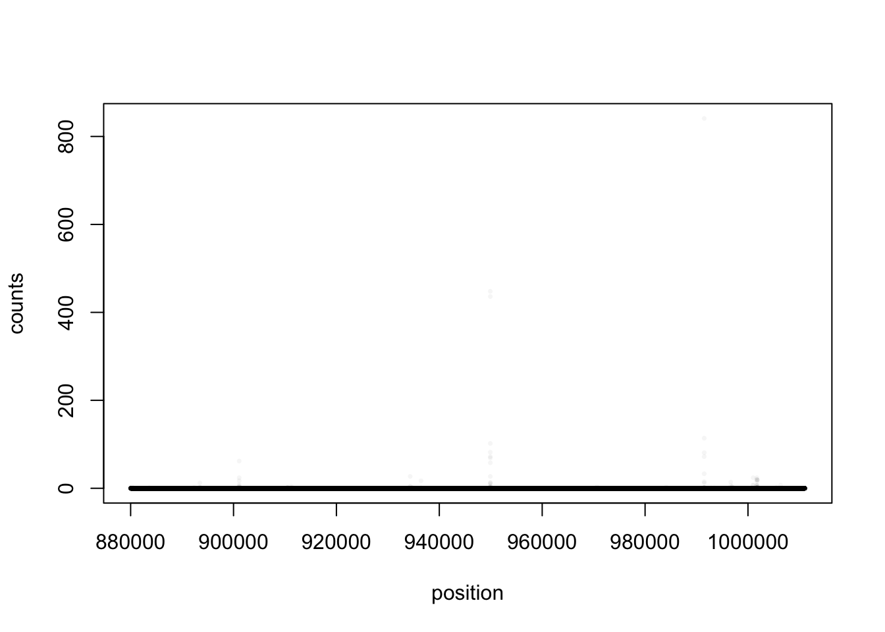
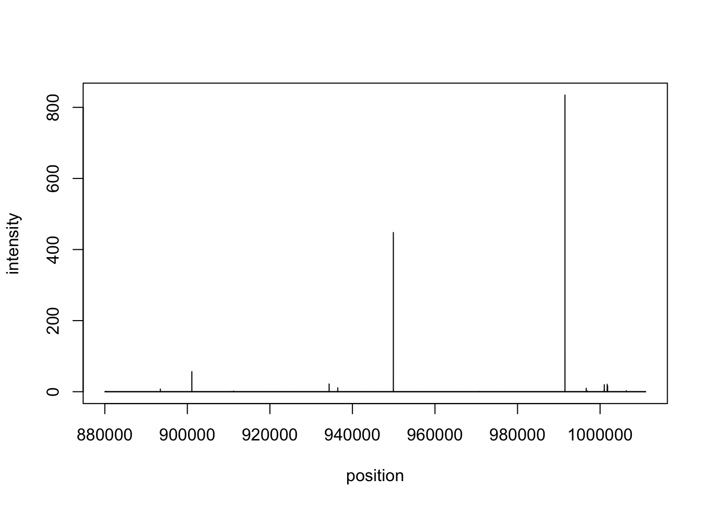
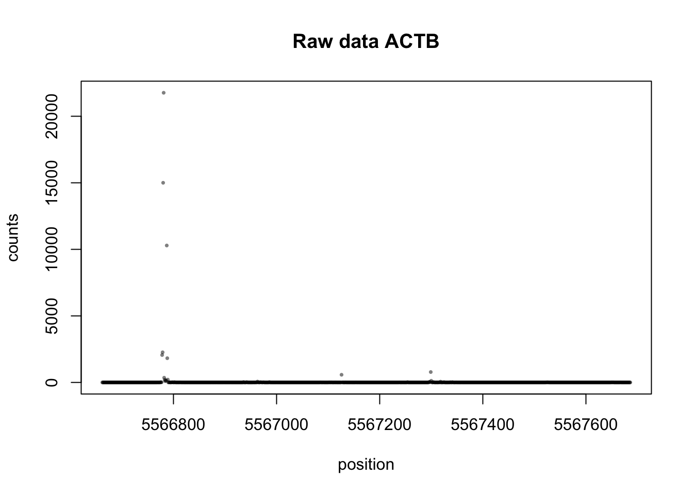
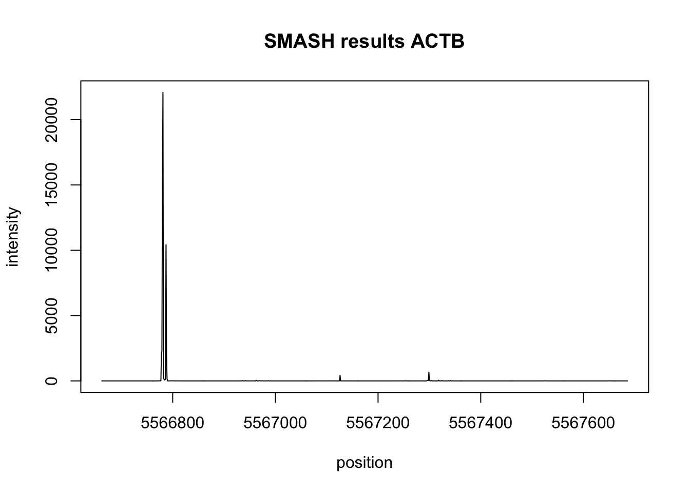
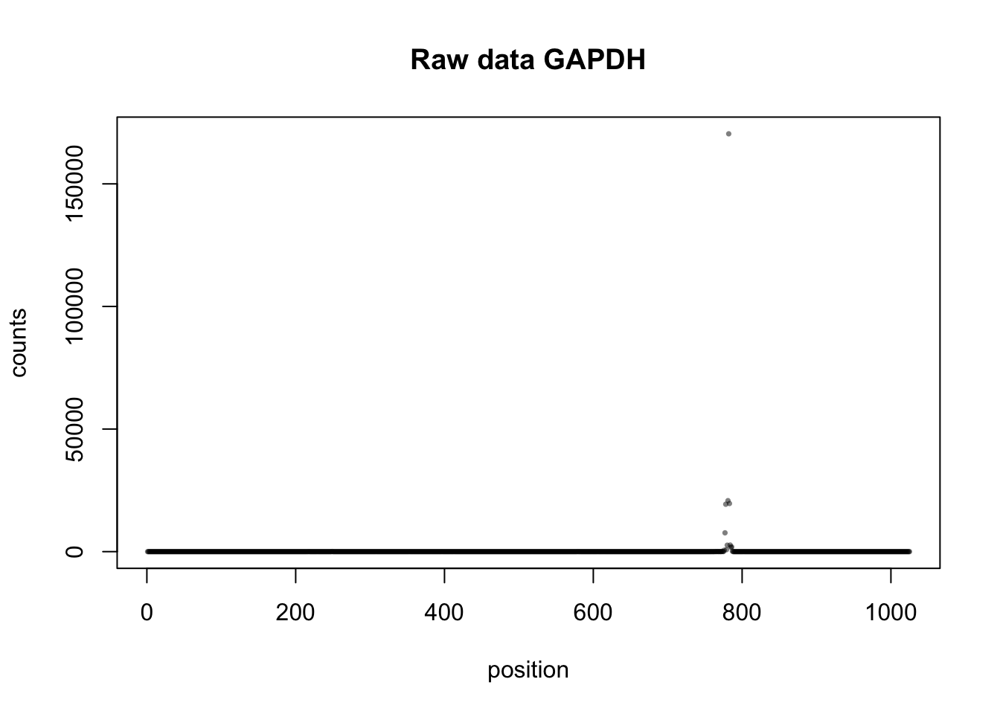
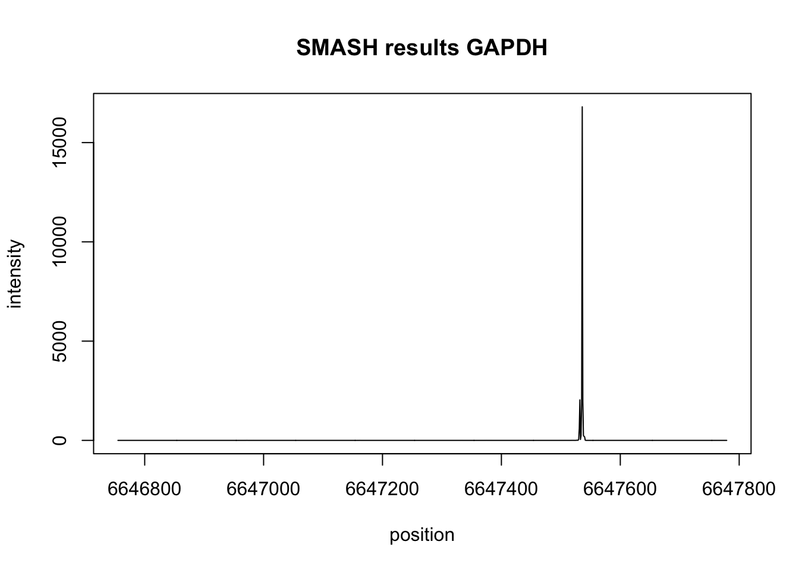

Last updated: 2018-07-19
workflowr checks: (Click a bullet for more information) ✔ R Markdown file: up-to-date
Great! Since the R Markdown file has been committed to the Git repository, you know the exact version of the code that produced these results.
✔ Environment: empty
Great job! The global environment was empty. Objects defined in the global environment can affect the analysis in your R Markdown file in unknown ways. For reproduciblity it’s best to always run the code in an empty environment.
✔ Seed:
set.seed(12345)
The command set.seed(12345) was run prior to running the code in the R Markdown file. Setting a seed ensures that any results that rely on randomness, e.g. subsampling or permutations, are reproducible.
✔ Session information: recorded
Great job! Recording the operating system, R version, and package versions is critical for reproducibility.
✔ Repository version: 31482e2
wflow_publish or wflow_git_commit). workflowr only checks the R Markdown file, but you know if there are other scripts or data files that it depends on. Below is the status of the Git repository when the results were generated:
Ignored files:
Ignored: .DS_Store
Ignored: .Rhistory
Ignored: .Rproj.user/
Ignored: output/.DS_Store
Untracked files:
Untracked: data/18486.genecov.txt
Untracked: data/APApeaksYL.total.inbrain.bed
Untracked: data/YL-SP-18486-T_S9_R1_001-genecov.txt
Untracked: data/bedgraph_peaks/
Untracked: data/bin200.5.T.nuccov.bed
Untracked: data/bin200.Anuccov.bed
Untracked: data/bin200.nuccov.bed
Untracked: data/gene_cov/
Untracked: data/leafcutter/
Untracked: data/nuc6up/
Untracked: data/reads_mapped_three_prime_seq.csv
Untracked: data/smash.cov.results.bed
Untracked: data/smash.cov.results.csv
Untracked: data/smash.cov.results.txt
Untracked: data/smash_testregion/
Untracked: data/ssFC200.cov.bed
Untracked: output/picard/
Untracked: output/plots/
Untracked: output/qual.fig2.pdf
Unstaged changes:
Modified: analysis/dif.iso.usage.leafcutter.Rmd
Modified: analysis/explore.filters.Rmd
Modified: analysis/test.max2.Rmd
Modified: code/Snakefile
| File | Version | Author | Date | Message |
|---|---|---|---|---|
| Rmd | 31482e2 | Briana Mittleman | 2018-07-19 | gapdh |
| html | 3193223 | Briana Mittleman | 2018-07-18 | Build site. |
| Rmd | 9d32076 | Briana Mittleman | 2018-07-18 | add actb example |
| html | 0464829 | Briana Mittleman | 2018-07-17 | Build site. |
| Rmd | cc5cc50 | Briana Mittleman | 2018-07-17 | test region smash results |
| html | d61f590 | Briana Mittleman | 2018-07-17 | Build site. |
| Rmd | 89ebcac | Briana Mittleman | 2018-07-17 | add smash test |
In this analysis I will use the tutorial I did for the SMASH package on chip seq data to test it on the three prime seq data. In order to complete this I need to make a matrix with genome location counts for where reads start for positions 880001:1011072 on chr1, I am using this region because I already know it fits the \(2^{x}\) criterion. I need the matrix to be individual by basepair. I can use genome cov in all of the total fractions then merge the results together to make a matrix.
#!/bin/bash
#SBATCH --job-name=5gencov
#SBATCH --account=pi-yangili1
#SBATCH --time=24:00:00
#SBATCH --output=5gencov.out
#SBATCH --error=5gencov.err
#SBATCH --partition=broadwl
#SBATCH --mem=40G
#SBATCH --mail-type=END
module load Anaconda3
source activate three-prime-env
#imput sorted bam file
bam=$1
describer=$(echo ${bam} | sed -e 's/.*\YL-SP-//' | sed -e "s/-sort.bam$//")
bedtools genomecov-ibam $1 -d -5 > /project2/gilad/briana/threeprimeseq/data/test.smash/gencov5prime.${describer}.bedrun on /project2/gilad/briana/threeprimeseq/data/sort/YL-SP-18486-N_S10_R1_001-sort.bam
wrap this function:
#!/bin/bash
#SBATCH --job-name=w_5gencov
#SBATCH --account=pi-yangili1
#SBATCH --time=24:00:00
#SBATCH --output=w_5gencov.out
#SBATCH --error=w_5gencov.err
#SBATCH --partition=broadwl
#SBATCH --mem=16G
#SBATCH --mail-type=END
module load Anaconda3
source activate three-prime-env
for i in $(ls /project2/gilad/briana/threeprimeseq/data/sort/*.bam); do
sbatch 5primegencov.sh $i
doneFirst I will get ch1 880001:1011072 for each individual.
#!/bin/bash
#SBATCH --job-name=test.reg
#SBATCH --account=pi-yangili1
#SBATCH --time=24:00:00
#SBATCH --output=test.reg.out
#SBATCH --error=test.reg.err
#SBATCH --partition=broadwl
#SBATCH --mem=20G
#SBATCH --mail-type=END
awk '$1 == 1 && $2 >= 880001 && $2 <= 1011072 {print}' /project2/gilad/briana/threeprimeseq/data/test.smash/gencov5prime.18486-T_S9_R1_001.bed > /project2/gilad/briana/threeprimeseq/data/test.region/gencov5prime.18486-T_S9_R1_001.testregion.bed
awk '$1 == 1 && $2 >= 880001 && $2 <= 1011072 {print}' /project2/gilad/briana/threeprimeseq/data/test.smash/gencov5prime.18497-T_S11_R1_001.bed > /project2/gilad/briana/threeprimeseq/data/test.region/gencov5prime.18497-T_S11_R1_001.testregion.bed
awk '$1 == 1 && $2 >= 880001 &5& $2 <= 1011072 {print}' /project2/gilad/briana/threeprimeseq/data/test.smash/gencov5prime.18500-T_S19_R1_001.bed > /project2/gilad/briana/threeprimeseq/data/test.region/gencov5prime.18500-T_S19_R1_001.testregion.bed
awk '$1 == 1 && $2 >= 880001 && $2 <= 1011072 {print}' /project2/gilad/briana/threeprimeseq/data/test.smash/gencov5prime.18505-T_S1_R1_001.bed > /project2/gilad/briana/threeprimeseq/data/test.region/gencov5prime.18505-T_S1_R1_001.testregion.bed
awk '$1 == 1 && $2 >= 880001 && $2 <= 1011072 {print}' gencov5prime.18508-T_S5_R1_001.bed > /project2/gilad/briana/threeprimeseq/data/test.region/gencov5prime.18508-T_S5_R1_001.testregion.bed
awk '$1 == 1 && $2 >= 880001 && $2 <= 1011072 {print}'/project2/gilad/briana/threeprimeseq/data/test.smash/gencov5prime.18853-T_S31_R1_001.bed > /project2/gilad/briana/threeprimeseq/data/test.region/gencov5prime.18853-T_S31_R1_001.testregion.bed
awk '$1 == 1 && $2 >= 880001 && $2 <= 1011072 {print}' /project2/gilad/briana/threeprimeseq/data/test.smash/gencov5prime.18870-T_S23_R1_001.bed > /project2/gilad/briana/threeprimeseq/data/test.region/gencov5prime.18870-T_S23_R1_001.testregion.bed
awk '$1 == 1 && $2 >= 880001 && $2 <= 1011072 {print}' /project2/gilad/briana/threeprimeseq/data/test.smash/gencov5prime.19128-T_S29_R1_001.bed > /project2/gilad/briana/threeprimeseq/data/test.region/gencov5prime.19128-T_S29_R1_001.testregion.bed
awk '$1 == 1 && $2 >= 880001 && $2 <= 1011072 {print}' /project2/gilad/briana/threeprimeseq/data/test.smash/gencov5prime.19141-T_S17_R1_001.bed > /project2/gilad/briana/threeprimeseq/data/test.region/gencov5prime.19141-T_S17_R1_001.testregion.bed
awk '$1 == 1 && $2 >= 880001 && $2 <= 1011072 {print}' /project2/gilad/briana/threeprimeseq/data/test.smash/gencov5prime.19193-T_S21_R1_001.bed > /project2/gilad/briana/threeprimeseq/data/test.region/gencov5prime.19193-T_S21_R1_001.testregion.bed
awk '$1 == 1 && $2 >= 880001 && $2 <= 1011072 {print}' /project2/gilad/briana/threeprimeseq/data/test.smash/gencov5prime.19209-T_S15_R1_001.bed > /project2/gilad/briana/threeprimeseq/data/test.region/gencov5prime.19209-T_S15_R1_001.testregion.bed
awk '$1 == 1 && $2 >= 880001 && $2 <= 1011072 {print}' /project2/gilad/briana/threeprimeseq/data/test.smash/gencov5prime.19233-T_S7_R1_001.bed > /project2/gilad/briana/threeprimeseq/data/test.region/gencov5prime.19223-T_S7_R1_001.testregion.bed
awk '$1 == 1 && $2 >= 880001 && $2 <= 1011072 {print}' /project2/gilad/briana/threeprimeseq/data/test.smash/gencov5prime.19225-T_S27_R1_001.bed > /project2/gilad/briana/threeprimeseq/data/test.region/gencov5prime.19225-T_S27_R1_001.testregion.bed
awk '$1 == 1 && $2 >= 880001 && $2 <= 1011072 {print}' /project2/gilad/briana/threeprimeseq/data/test.smash/gencov5prime.19238-T_S3_R1_001.bed > /project2/gilad/briana/threeprimeseq/data/test.region/gencov5prime.19238-T_S3_R1_001.testregion.bed
awk '$1 == 1 && $2 >= 880001 && $2 <= 1011072 {print}' /project2/gilad/briana/threeprimeseq/data/test.smash/gencov5prime.19239-T_S13_R1_001.bed > /project2/gilad/briana/threeprimeseq/data/test.region/gencov5prime.19239-T_S13_R1_001.testregion.bed
awk '$1 == 1 && $2 >= 880001 && $2 <= 1011072 {print}' /project2/gilad/briana/threeprimeseq/data/test.smash/gencov5prime.19257-T_S25_R1_001.bed > /project2/gilad/briana/threeprimeseq/data/test.region/gencov5prime.19257-T_S25_R1_001.testregion.bed
3 didnt work. Try these again.
#!/bin/bash
#SBATCH --job-name=test.reg2
#SBATCH --account=pi-yangili1
#SBATCH --time=24:00:00
#SBATCH --output=test.reg2.out
#SBATCH --error=test.reg2.err
#SBATCH --partition=broadwl
#SBATCH --mem=20G
#SBATCH --mail-type=END
awk '$1 == 1 && $2 >= 880001 && $2 <= 1011072 {print}' /project2/gilad/briana/threeprimeseq/data/test.smash/gencov5prime.18508-T_S5_R1_001.bed > /project2/gilad/briana/threeprimeseq/data/test.region/gencov5prime.18508-T_S5_R1_001.testregion.bed
awk '$1 == 1 && $2 >= 880001 && $2 <= 1011072 {print}' /project2/gilad/briana/threeprimeseq/data/test.smash/gencov5prime.18853-T_S31_R1_001.bed > /project2/gilad/briana/threeprimeseq/data/test.region/gencov5prime.18853-T_S31_R1_001.testregion.bed
awk '$1 == 1 && $2 >= 880001 && $2 <= 1011072 {print}' /project2/gilad/briana/threeprimeseq/data/test.smash/gencov5prime.18500-T_S19_R1_001.bed > /project2/gilad/briana/threeprimeseq/data/test.region/gencov5prime.18500-T_S19_R1_001.testregion.bed
Now I will pull in these regions and merge them to make a matrix I can put into smashr.
test_18468=read.table("../data/smash_testregion/gencov5prime.18486-T_S9_R1_001.testregion.bed", col.names=c("chr", "base", "T18486"))
test_18497=read.table("../data/smash_testregion/gencov5prime.18497-T_S11_R1_001.testregion.bed", col.names=c("chr", "base", "T18497"))
test_18500=read.table("../data/smash_testregion/gencov5prime.18500-T_S19_R1_001.testregion.bed", col.names=c("chr", "base", "T18500"))
test_18505=read.table("../data/smash_testregion/gencov5prime.18505-T_S1_R1_001.testregion.bed", col.names=c("chr", "base", "T18505"))
test_18508=read.table("../data/smash_testregion/gencov5prime.18508-T_S5_R1_001.testregion.bed", col.names=c("chr", "base", "T18508"))
test_18853=read.table("../data/smash_testregion/gencov5prime.18853-T_S31_R1_001.testregion.bed", col.names=c("chr", "base", "T18853"))
test_18870=read.table("../data/smash_testregion/gencov5prime.18870-T_S23_R1_001.testregion.bed", col.names=c("chr", "base", "T18870"))
test_19128=read.table("../data/smash_testregion/gencov5prime.19128-T_S29_R1_001.testregion.bed", col.names=c("chr", "base", "T19128"))
test_19239=read.table("../data/smash_testregion/gencov5prime.19239-T_S13_R1_001.testregion.bed", col.names=c("chr", "base", "T19239"))
test_19257=read.table("../data/smash_testregion/gencov5prime.19257-T_S25_R1_001.testregion.bed", col.names=c("chr", "base", "T19257"))
test_19141=read.table("../data/smash_testregion/gencov5prime.19141-T_S17_R1_001.testregion.bed", col.names=c("chr", "base", "T19141"))
test_19193=read.table("../data/smash_testregion/gencov5prime.19193-T_S21_R1_001.testregion.bed", col.names=c("chr", "base", "T19193"))
test_19209=read.table("../data/smash_testregion/gencov5prime.19209-T_S15_R1_001.testregion.bed", col.names=c("chr", "base", "T19209"))
test_19223=read.table("../data/smash_testregion/gencov5prime.19223-T_S7_R1_001.testregion.bed", col.names=c("chr", "base", "T19223"))
test_19225=read.table("../data/smash_testregion/gencov5prime.19225-T_S27_R1_001.testregion.bed", col.names=c("chr", "base", "T19225"))
test_19238=read.table("../data/smash_testregion/gencov5prime.19238-T_S3_R1_001.testregion.bed", col.names=c("chr", "base", "T19238"))Load Packages:
library(devtools)Warning: package 'devtools' was built under R version 3.4.4library(scales)
library(smashr)
library(tidyr)
library(workflowr)Loading required package: rmarkdownThis is workflowr version 1.0.1
Run ?workflowr for help getting startedlibrary(dplyr)Warning: package 'dplyr' was built under R version 3.4.4
Attaching package: 'dplyr'The following objects are masked from 'package:stats':
filter, lagThe following objects are masked from 'package:base':
intersect, setdiff, setequal, unionBind all of the count
test_matrix=cbind(test_18468$T18486, test_18497$T18497, test_18500$T18500, test_18505$T18505, test_18508$T18508, test_18853$T18853, test_18870$T18870, test_19128$T19128, test_19141$T19141, test_19193$T19193, test_19209$T19209, test_19223$T19223, test_19225$T19225, test_19238$T19238, test_19239$T19239, test_19257$T19257) %>% tRun smash:
res = smash.poiss(test_matrix[1,]+test_matrix[2,],post.var=TRUE)Due to absence of package REBayes, switching to EM algorithm
Due to absence of package REBayes, switching to EM algorithm
Due to absence of package REBayes, switching to EM algorithm
Due to absence of package REBayes, switching to EM algorithm
Due to absence of package REBayes, switching to EM algorithm
Due to absence of package REBayes, switching to EM algorithm
Due to absence of package REBayes, switching to EM algorithm
Due to absence of package REBayes, switching to EM algorithm
Due to absence of package REBayes, switching to EM algorithm
Due to absence of package REBayes, switching to EM algorithm
Due to absence of package REBayes, switching to EM algorithm
Due to absence of package REBayes, switching to EM algorithmSquarem-1
Objective fn: 316440
Objective fn: 75069.3 Extrapolation: 0 Steplength: 1
Objective fn: 20919.7 Extrapolation: 1 Steplength: 1.7761
Objective fn: 17547 Extrapolation: 1 Steplength: 4
Objective fn: 17138.8 Extrapolation: 1 Steplength: 4.55255
Objective fn: 16836.6 Extrapolation: 1 Steplength: 1.86253
Objective fn: 16818.8 Extrapolation: 1 Steplength: 6.42316
Objective fn: 16816 Extrapolation: 1 Steplength: 1.66778
Objective fn: 16815.9 Extrapolation: 1 Steplength: 7.08232Due to absence of package REBayes, switching to EM algorithmSquarem-1
Objective fn: 547800
Objective fn: 101309 Extrapolation: 0 Steplength: 1
Objective fn: 37390.2 Extrapolation: 1 Steplength: 1.89191
Objective fn: 32343.6 Extrapolation: 1 Steplength: 4
Objective fn: 31416.8 Extrapolation: 1 Steplength: 5.23485
Objective fn: 31019 Extrapolation: 1 Steplength: 2.24046
Objective fn: 31004.3 Extrapolation: 1 Steplength: 5.95071
Objective fn: 31003.4 Extrapolation: 1 Steplength: 2.25357
Objective fn: 31003.3 Extrapolation: 1 Steplength: 6.79538Due to absence of package REBayes, switching to EM algorithmSquarem-1
Objective fn: 882921
Objective fn: 118772 Extrapolation: 0 Steplength: 1
Objective fn: 49764.5 Extrapolation: 1 Steplength: 1.87244
Objective fn: 44341.9 Extrapolation: 1 Steplength: 4
Objective fn: 43183.7 Extrapolation: 1 Steplength: 4.56042
Objective fn: 41597.4 Extrapolation: 1 Steplength: 1.93991
Objective fn: 41582.5 Extrapolation: 1 Steplength: 7.15247
Objective fn: 41416.1 Extrapolation: 1 Steplength: 1.69043
Objective fn: 41408.8 Extrapolation: 1 Steplength: 9.74108
Objective fn: 41406.9 Extrapolation: 1 Steplength: 1.59935
Objective fn: 41406.9 Extrapolation: 1 Steplength: 5.74521
Objective fn: 41406.8 Extrapolation: 1 Steplength: 3.48951Due to absence of package REBayes, switching to EM algorithmSquarem-1
Objective fn: 1.2791e+06
Objective fn: 88217.7 Extrapolation: 0 Steplength: 1
Objective fn: 48098 Extrapolation: 1 Steplength: 3.21173
Objective fn: 41534.8 Extrapolation: 1 Steplength: 3.31029
Objective fn: 39112.5 Extrapolation: 1 Steplength: 1.9387
Objective fn: 38929.7 Extrapolation: 1 Steplength: 4
Objective fn: 38852.8 Extrapolation: 1 Steplength: 1.89245
Objective fn: 38845.6 Extrapolation: 1 Steplength: 5.02972
Objective fn: 38844.1 Extrapolation: 1 Steplength: 1.53262
Objective fn: 38843.9 Extrapolation: 1 Steplength: 6.32374Due to absence of package REBayes, switching to EM algorithmSquarem-1
Objective fn: 1.19992e+06
Objective fn: 127113 Extrapolation: 0 Steplength: 1
Objective fn: 103768 Extrapolation: 1 Steplength: 2.87597
Objective fn: 100999 Extrapolation: 1 Steplength: 4
Objective fn: 99983.8 Extrapolation: 1 Steplength: 3.04432
Objective fn: 99154 Extrapolation: 1 Steplength: 4.6448
Objective fn: 98661.4 Extrapolation: 1 Steplength: 2.95052
Objective fn: 98391.1 Extrapolation: 1 Steplength: 5.09439
Objective fn: 98302.4 Extrapolation: 1 Steplength: 2.05767
Objective fn: 98288.2 Extrapolation: 1 Steplength: 13.5878
Objective fn: 98224.6 Extrapolation: 1 Steplength: 1.53983
Objective fn: 98212.4 Extrapolation: 1 Steplength: 16
Objective fn: 98207 Extrapolation: 1 Steplength: 2.54441
Objective fn: 98203.1 Extrapolation: 1 Steplength: 8.20699
Objective fn: 98202 Extrapolation: 1 Steplength: 2.00162
Objective fn: 98199.8 Extrapolation: 1 Steplength: 16.5155
Objective fn: 98198.5 Extrapolation: 1 Steplength: 1.62338
Objective fn: 98199 Extrapolation: 1 Steplength: 44.8518
Objective fn: 98195.9 Extrapolation: 1 Steplength: 1.4749
Objective fn: 98195.6 Extrapolation: 0 Steplength: 1
Objective fn: 98195.4 Extrapolation: 0 Steplength: 1
Objective fn: 98195.2 Extrapolation: 0 Steplength: 1
Objective fn: 98195.1 Extrapolation: 0 Steplength: 1
Objective fn: 98194.8 Extrapolation: 1 Steplength: 16
Objective fn: 98194.6 Extrapolation: 0 Steplength: 1
Objective fn: 98194.5 Extrapolation: 0 Steplength: 1
Objective fn: 98194.4 Extrapolation: 0 Steplength: 1
Objective fn: 98194.2 Extrapolation: 1 Steplength: 16
Objective fn: 98194 Extrapolation: 0 Steplength: 1
Objective fn: 98193.9 Extrapolation: 0 Steplength: 1
Objective fn: 98193.7 Extrapolation: 1 Steplength: 16
Objective fn: 98193.6 Extrapolation: 0 Steplength: 1
Objective fn: 98193.5 Extrapolation: 0 Steplength: 1
Objective fn: 98193.4 Extrapolation: 0 Steplength: 1
Objective fn: 98193 Extrapolation: 1 Steplength: 16
Objective fn: 98192.9 Extrapolation: 0 Steplength: 1
Objective fn: 98192.8 Extrapolation: 0 Steplength: 1
Objective fn: 98192.7 Extrapolation: 0 Steplength: 1
Objective fn: 98192.1 Extrapolation: 1 Steplength: 16
Objective fn: 98192 Extrapolation: 0 Steplength: 1
Objective fn: 98191.9 Extrapolation: 0 Steplength: 1
Objective fn: 98190.9 Extrapolation: 1 Steplength: 16
Objective fn: 98190.8 Extrapolation: 0 Steplength: 1
Objective fn: 98190.6 Extrapolation: 0 Steplength: 1
Objective fn: 98189.2 Extrapolation: 1 Steplength: 16
Objective fn: 98189 Extrapolation: 0 Steplength: 1
Objective fn: 98186.8 Extrapolation: 1 Steplength: 16
Objective fn: 98186.6 Extrapolation: 0 Steplength: 1
Objective fn: 98183.6 Extrapolation: 1 Steplength: 16
Objective fn: 98183.3 Extrapolation: 0 Steplength: 1
Objective fn: 98179.6 Extrapolation: 1 Steplength: 16
Objective fn: 98179.1 Extrapolation: 0 Steplength: 1
Objective fn: 98175 Extrapolation: 1 Steplength: 16
Objective fn: 98174.4 Extrapolation: 0 Steplength: 1
Objective fn: 98171 Extrapolation: 1 Steplength: 16
Objective fn: 98170.2 Extrapolation: 0 Steplength: 1
Objective fn: 98169.6 Extrapolation: 0 Steplength: 1
Objective fn: 98167.5 Extrapolation: 1 Steplength: 16
Objective fn: 98166.5 Extrapolation: 0 Steplength: 1
Objective fn: 98165.9 Extrapolation: 0 Steplength: 1
Objective fn: 98165.4 Extrapolation: 0 Steplength: 1
Objective fn: 98164.7 Extrapolation: 1 Steplength: 16
Objective fn: 98163.9 Extrapolation: 0 Steplength: 1
Objective fn: 98163.3 Extrapolation: 0 Steplength: 1
Objective fn: 98163 Extrapolation: 0 Steplength: 1
Objective fn: 98162.7 Extrapolation: 0 Steplength: 1
Objective fn: 98162.6 Extrapolation: 1 Steplength: 16
Objective fn: 98162.1 Extrapolation: 0 Steplength: 1
Objective fn: 98161.8 Extrapolation: 0 Steplength: 1
Objective fn: 98161.6 Extrapolation: 0 Steplength: 1
Objective fn: 98161.5 Extrapolation: 0 Steplength: 1
Objective fn: 98161.4 Extrapolation: 0 Steplength: 1
Objective fn: 98161.3 Extrapolation: 0 Steplength: 1
Objective fn: 98161.2 Extrapolation: 1 Steplength: 16
Objective fn: 98161.1 Extrapolation: 0 Steplength: 1
Objective fn: 98161 Extrapolation: 0 Steplength: 1
Objective fn: 98160.9 Extrapolation: 0 Steplength: 1
Objective fn: 98160.9 Extrapolation: 0 Steplength: 1
Objective fn: 98160.9 Extrapolation: 0 Steplength: 1
Objective fn: 98160.9 Extrapolation: 1 Steplength: 16
Objective fn: 98160.8 Extrapolation: 0 Steplength: 1
Objective fn: 98160.8 Extrapolation: 0 Steplength: 1
Objective fn: 98160.8 Extrapolation: 0 Steplength: 1
Objective fn: 98160.8 Extrapolation: 0 Steplength: 1
Objective fn: 98160.7 Extrapolation: 0 Steplength: 1
Objective fn: 98160.7 Extrapolation: 1 Steplength: 16
Objective fn: 98160.7 Extrapolation: 0 Steplength: 1
Objective fn: 98160.7 Extrapolation: 0 Steplength: 1
Objective fn: 98160.7 Extrapolation: 0 Steplength: 1
Objective fn: 98160.7 Extrapolation: 1 Steplength: 16
Objective fn: 98160.7 Extrapolation: 0 Steplength: 1
Objective fn: 98160.7 Extrapolation: 0 Steplength: 1
Objective fn: 98160.7 Extrapolation: 0 Steplength: 1
Objective fn: 98160.7 Extrapolation: 1 Steplength: 16
Objective fn: 98160.7 Extrapolation: 0 Steplength: 1
Objective fn: 98160.7 Extrapolation: 0 Steplength: 1
Objective fn: 98160.7 Extrapolation: 0 Steplength: 1
Objective fn: 98160.7 Extrapolation: 1 Steplength: 16
Objective fn: 98161.6 Extrapolation: 1 Steplength: 25.5964
Objective fn: 98160.7 Extrapolation: 1 Steplength: 4.9659
Objective fn: 98160.7 Extrapolation: 0 Steplength: 1
Objective fn: 98160.7 Extrapolation: 1 Steplength: 16
Objective fn: 98160.7 Extrapolation: 0 Steplength: 1
Objective fn: 98160.6 Extrapolation: 0 Steplength: 1
Objective fn: 98160.6 Extrapolation: 0 Steplength: 1
Objective fn: 98160.7 Extrapolation: 1 Steplength: 16
Objective fn: 98161.4 Extrapolation: 1 Steplength: 28.4418
Objective fn: 98160.6 Extrapolation: 1 Steplength: 4.88053
Objective fn: 98161.5 Extrapolation: 1 Steplength: 64
Objective fn: 98160.9 Extrapolation: 1 Steplength: 1.58458
Objective fn: 98160.6 Extrapolation: 1 Steplength: 5.74946
Objective fn: 98160.7 Extrapolation: 1 Steplength: 18.0007
Objective fn: 98160.6 Extrapolation: 1 Steplength: 1.31963
Objective fn: 98160.8 Extrapolation: 1 Steplength: 14.5938
Objective fn: 98160.6 Extrapolation: 1 Steplength: 5.87148
Objective fn: 98160.6 Extrapolation: 1 Steplength: 2.79445
Objective fn: 98160.6 Extrapolation: 1 Steplength: 10.536
Objective fn: 98160.6 Extrapolation: 1 Steplength: 1.26176
Objective fn: 98160.6 Extrapolation: 0 Steplength: 1
Objective fn: 98160.6 Extrapolation: 0 Steplength: 1
Objective fn: 98160.6 Extrapolation: 1 Steplength: 64
Objective fn: 98160.7 Extrapolation: 1 Steplength: 11.4375
Objective fn: 98160.6 Extrapolation: 1 Steplength: 3.26847
Objective fn: 98160.6 Extrapolation: 1 Steplength: 4.39932
Objective fn: 98160.6 Extrapolation: 1 Steplength: 3.21355
Objective fn: 98160.6 Extrapolation: 1 Steplength: 7.1878
Objective fn: 98160.6 Extrapolation: 1 Steplength: 1.51531
Objective fn: 98160.5 Extrapolation: 1 Steplength: 256
Objective fn: 98160.5 Extrapolation: 1 Steplength: 1.39451
Objective fn: 98160.7 Extrapolation: 1 Steplength: 479.942
Objective fn: 98160.5 Extrapolation: 1 Steplength: 1.41467
Objective fn: 98160.6 Extrapolation: 1 Steplength: 14.2088
Objective fn: 98160.5 Extrapolation: 1 Steplength: 2.52095
Objective fn: 98160.5 Extrapolation: 1 Steplength: 9.92198
Objective fn: 98160.5 Extrapolation: 1 Steplength: 2.79295Due to absence of package REBayes, switching to EM algorithmSquarem-1
Objective fn: 687462
Objective fn: 233579 Extrapolation: 0 Steplength: 1
Objective fn: 163301 Extrapolation: 1 Steplength: 2.96537
Objective fn: 101350 Extrapolation: 0 Steplength: 1
Objective fn: 87205.9 Extrapolation: 1 Steplength: 3.31731
Objective fn: 83310 Extrapolation: 1 Steplength: 1.41235
Objective fn: 83078.4 Extrapolation: 1 Steplength: 4
Objective fn: 83067.1 Extrapolation: 1 Steplength: 2.82442
Objective fn: 83065.1 Extrapolation: 1 Steplength: 2.48778
Objective fn: 83064.6 Extrapolation: 1 Steplength: 2.94018
Objective fn: 83064.5 Extrapolation: 1 Steplength: 2.28751
Objective fn: 83064.5 Extrapolation: 1 Steplength: 3.24189bppos = 880001:1011072
plot(bppos,test_matrix[1,]+test_matrix[2,],xlab="position",ylab="counts",pch=16,cex=0.5, col=alpha("black",0.04))
| Version | Author | Date |
|---|---|---|
| 0464829 | Briana Mittleman | 2018-07-17 |
plot(bppos,res$est,type='l',xlab="position",ylab="intensity")
| Version | Author | Date |
|---|---|---|
| 0464829 | Briana Mittleman | 2018-07-17 |
Create a coverage file with the results.
cov=cbind(test_18468$chr, test_18468$base + 1, test_18468$base, res$est)I want to try this on a region with higher background for example where actb is. I can run a smaller region of \(2^{10}\) bases. chr7:5,566,662-5,567,686. The following script to extract the region is called test.actbregion.sh.
#!/bin/bash
#SBATCH --job-name=test.regactb
#SBATCH --account=pi-yangili1
#SBATCH --time=24:00:00
#SBATCH --output=test.regact.out
#SBATCH --error=test.regact.err
#SBATCH --partition=broadwl
#SBATCH --mem=20G
#SBATCH --mail-type=END
awk '$1 == 7 && $2 >= 5566662 && $2 <= 5567686 {print}' /project2/gilad/briana/threeprimeseq/data/test.smash/gencov5prime.18486-T_S9_R1_001.bed > /project2/gilad/briana/threeprimeseq/data/test.region/gencov5prime.18486-T_S9_R1_001.testregion.actb.bed
awk '$1 == 7 && $2 >= 5566662 && $2 <= 5567686 {print}' /project2/gilad/briana/threeprimeseq/data/test.smash/gencov5prime.18497-T_S11_R1_001.bed > /project2/gilad/briana/threeprimeseq/data/test.region/gencov5prime.18497-T_S11_R1_001.testregion.actb.bed
awk '$1 == 7 && $2 >= 5566662 && $2 <= 5567686 {print}' /project2/gilad/briana/threeprimeseq/data/test.smash/gencov5prime.18500-T_S19_R1_001.bed > /project2/gilad/briana/threeprimeseq/data/test.region/gencov5prime.18500-T_S19_R1_001.testregion.actb.bed
awk '$1 == 7 && $2 >= 5566662 && $2 <= 5567686 {print}' /project2/gilad/briana/threeprimeseq/data/test.smash/gencov5prime.18505-T_S1_R1_001.bed > /project2/gilad/briana/threeprimeseq/data/test.region/gencov5prime.18505-T_S1_R1_001.testregion.actb.bed
awk '$1 == 7 && $2 >= 5566662 && $2 <= 5567686 {print}' /project2/gilad/briana/threeprimeseq/data/test.smash/gencov5prime.18508-T_S5_R1_001.bed > /project2/gilad/briana/threeprimeseq/data/test.region/gencov5prime.18508-T_S5_R1_001.testregion.actb.bed
awk '$1 == 7 && $2 >= 5566662 && $2 <= 5567686 {print}' /project2/gilad/briana/threeprimeseq/data/test.smash/gencov5prime.18853-T_S31_R1_001.bed > /project2/gilad/briana/threeprimeseq/data/test.region/gencov5prime.18853-T_S31_R1_001.testregion.actb.bed
awk '$1 == 7 && $2 >= 5566662 && $2 <= 5567686 {print}' /project2/gilad/briana/threeprimeseq/data/test.smash/gencov5prime.18870-T_S23_R1_001.bed > /project2/gilad/briana/threeprimeseq/data/test.region/gencov5prime.18870-T_S23_R1_001.testregion.actb.bed
awk '$1 == 7 && $2 >= 5566662 && $2 <= 5567686 {print}' /project2/gilad/briana/threeprimeseq/data/test.smash/gencov5prime.19128-T_S29_R1_001.bed > /project2/gilad/briana/threeprimeseq/data/test.region/gencov5prime.19128-T_S29_R1_001.testregion.actb.bed
awk '$1 == 7 && $2 >= 5566662 && $2 <= 5567686 {print}' /project2/gilad/briana/threeprimeseq/data/test.smash/gencov5prime.19141-T_S17_R1_001.bed > /project2/gilad/briana/threeprimeseq/data/test.region/gencov5prime.19141-T_S17_R1_001.testregion.actb.bed
awk '$1 == 7 && $2 >= 5566662 && $2 <= 5567686 {print}' /project2/gilad/briana/threeprimeseq/data/test.smash/gencov5prime.19193-T_S21_R1_001.bed > /project2/gilad/briana/threeprimeseq/data/test.region/gencov5prime.19193-T_S21_R1_001.testregion.actb.bed
awk '$1 == 7 && $2 >= 5566662 && $2 <= 5567686 {print}' /project2/gilad/briana/threeprimeseq/data/test.smash/gencov5prime.19209-T_S15_R1_001.bed > /project2/gilad/briana/threeprimeseq/data/test.region/gencov5prime.19209-T_S15_R1_001.testregion.actb.bed
awk '$1 == 7 && $2 >= 5566662 && $2 <= 5567686 {print}' /project2/gilad/briana/threeprimeseq/data/test.smash/gencov5prime.19233-T_S7_R1_001.bed > /project2/gilad/briana/threeprimeseq/data/test.region/gencov5prime.19223-T_S7_R1_001.testregion.actb.bed
awk '$1 == 7 && $2 >= 5566662 && $2 <= 5567686 {print}' /project2/gilad/briana/threeprimeseq/data/test.smash/gencov5prime.19225-T_S27_R1_001.bed > /project2/gilad/briana/threeprimeseq/data/test.region/gencov5prime.19225-T_S27_R1_001.testregion.actb.bed
awk '$1 == 7 && $2 >= 5566662 && $2 <= 5567686 {print}' /project2/gilad/briana/threeprimeseq/data/test.smash/gencov5prime.19238-T_S3_R1_001.bed > /project2/gilad/briana/threeprimeseq/data/test.region/gencov5prime.19238-T_S3_R1_001.testregion.actb.bed
awk '$1 == 7 && $2 >= 5566662 && $2 <= 5567686 {print}' /project2/gilad/briana/threeprimeseq/data/test.smash/gencov5prime.19239-T_S13_R1_001.bed > /project2/gilad/briana/threeprimeseq/data/test.region/gencov5prime.19239-T_S13_R1_001.testregion.actb.bed
awk '$1 == 7 && $2 >= 5566662 && $2 <= 5567686 {print}' /project2/gilad/briana/threeprimeseq/data/test.smash/gencov5prime.19257-T_S25_R1_001.bed > /project2/gilad/briana/threeprimeseq/data/test.region/gencov5prime.19257-T_S25_R1_001.testregion.actb.bed
18853 did not work, running seperatly.
actb_test_18468=read.table("../data/smash_testregion/gencov5prime.18486-T_S9_R1_001.testregion.actb.bed", col.names=c("chr", "base", "T18486"))
actb_test_18497=read.table("../data/smash_testregion/gencov5prime.18497-T_S11_R1_001.testregion.actb.bed", col.names=c("chr", "base", "T18497"))
actb_test_18500=read.table("../data/smash_testregion/gencov5prime.18500-T_S19_R1_001.testregion.actb.bed", col.names=c("chr", "base", "T18500"))
actb_test_18505=read.table("../data/smash_testregion/gencov5prime.18505-T_S1_R1_001.testregion.actb.bed", col.names=c("chr", "base", "T18505"))
actb_test_18508=read.table("../data/smash_testregion/gencov5prime.18508-T_S5_R1_001.testregion.actb.bed", col.names=c("chr", "base", "T18508"))
actb_test_18853=read.table("../data/smash_testregion/gencov5prime.18853-T_S31_R1_001.testregion.actb.bed", col.names=c("chr", "base", "T18853"))
actb_test_18870=read.table("../data/smash_testregion/gencov5prime.18870-T_S23_R1_001.testregion.actb.bed", col.names=c("chr", "base", "T18870"))
actb_test_19128=read.table("../data/smash_testregion/gencov5prime.19128-T_S29_R1_001.testregion.actb.bed", col.names=c("chr", "base", "T19128"))
actb_test_19239=read.table("../data/smash_testregion/gencov5prime.19239-T_S13_R1_001.testregion.actb.bed", col.names=c("chr", "base", "T19239"))
actb_test_19257=read.table("../data/smash_testregion/gencov5prime.19257-T_S25_R1_001.testregion.actb.bed", col.names=c("chr", "base", "T19257"))
actb_test_19141=read.table("../data/smash_testregion/gencov5prime.19141-T_S17_R1_001.testregion.actb.bed", col.names=c("chr", "base", "T19141"))
actb_test_19193=read.table("../data/smash_testregion/gencov5prime.19193-T_S21_R1_001.testregion.actb.bed", col.names=c("chr", "base", "T19193"))
actb_test_19209=read.table("../data/smash_testregion/gencov5prime.19209-T_S15_R1_001.testregion.actb.bed", col.names=c("chr", "base", "T19209"))
actb_test_19223=read.table("../data/smash_testregion/gencov5prime.19223-T_S7_R1_001.testregion.actb.bed", col.names=c("chr", "base", "T19223"))
actb_test_19225=read.table("../data/smash_testregion/gencov5prime.19225-T_S27_R1_001.testregion.actb.bed", col.names=c("chr", "base", "T19225"))
actb_test_19238=read.table("../data/smash_testregion/gencov5prime.19238-T_S3_R1_001.testregion.actb.bed", col.names=c("chr", "base", "T19238"))Make matrix
actb_test_matrix=cbind(actb_test_18468$T18486, actb_test_18497$T18497, actb_test_18500$T18500, actb_test_18505$T18505, actb_test_18508$T18508, actb_test_18853$T18853, actb_test_18870$T18870, actb_test_19128$T19128, actb_test_19141$T19141, actb_test_19193$T19193, actb_test_19209$T19209, actb_test_19223$T19223, actb_test_19225$T19225, actb_test_19238$T19238, actb_test_19239$T19239, actb_test_19257$T19257) %>% tRun smash:
actb_res = smash.poiss(actb_test_matrix[1,]+actb_test_matrix[2,],post.var=TRUE)Due to absence of package REBayes, switching to EM algorithm
Due to absence of package REBayes, switching to EM algorithm
Due to absence of package REBayes, switching to EM algorithm
Due to absence of package REBayes, switching to EM algorithm
Due to absence of package REBayes, switching to EM algorithm
Due to absence of package REBayes, switching to EM algorithm
Due to absence of package REBayes, switching to EM algorithm
Due to absence of package REBayes, switching to EM algorithm
Due to absence of package REBayes, switching to EM algorithm
Due to absence of package REBayes, switching to EM algorithm
Due to absence of package REBayes, switching to EM algorithm
Due to absence of package REBayes, switching to EM algorithmMake plots:
actb_bppos = 5566662:5567686
plot(actb_bppos,actb_test_matrix[1,]+actb_test_matrix[2,],xlab="position",ylab="counts",pch=16,cex=0.5, col=alpha("black",1), main="Raw data ACTB")
| Version | Author | Date |
|---|---|---|
| 3193223 | Briana Mittleman | 2018-07-18 |
plot(actb_bppos,actb_res$est,type='l',xlab="position",ylab="intensity", main="SMASH results ACTB")
| Version | Author | Date |
|---|---|---|
| 3193223 | Briana Mittleman | 2018-07-18 |
Check on another highly expressed gene to see if this dual peak pattern appears again. I will look at GAPDH. Chr12 6,646,755-6,647,779
#!/bin/bash
#SBATCH --job-name=test.reggap
#SBATCH --account=pi-yangili1
#SBATCH --time=24:00:00
#SBATCH --output=test.reggap.out
#SBATCH --error=test.reggap.err
#SBATCH --partition=broadwl
#SBATCH --mem=20G
#SBATCH --mail-type=END
awk '$1 == 12 && $2 >= 6646755 && $2 <= 6647779 {print}' /project2/gilad/briana/threeprimeseq/data/test.smash/gencov5prime.18486-T_S9_R1_001.bed > /project2/gilad/briana/threeprimeseq/data/test.region/gencov5prime.18486-T_S9_R1_001.testregion.gap.bed
awk '$1 == 12 && $2 >= 6646755 && $2 <= 6647779 {print}' /project2/gilad/briana/threeprimeseq/data/test.smash/gencov5prime.18497-T_S11_R1_001.bed > /project2/gilad/briana/threeprimeseq/data/test.region/gencov5prime.18497-T_S11_R1_001.testregion.gap.bed
awk '$1 == 12 && $2 >= 6646755 && $2 <= 6647779 {print}' /project2/gilad/briana/threeprimeseq/data/test.smash/gencov5prime.18500-T_S19_R1_001.bed > /project2/gilad/briana/threeprimeseq/data/test.region/gencov5prime.18500-T_S19_R1_001.testregion.gap.bed
awk '$1 == 12 && $2 >= 6646755 && $2 <= 6647779 {print}' /project2/gilad/briana/threeprimeseq/data/test.smash/gencov5prime.18505-T_S1_R1_001.bed > /project2/gilad/briana/threeprimeseq/data/test.region/gencov5prime.18505-T_S1_R1_001.testregion.gap.bed
awk '$1 == 12 && $2 >= 6646755 && $2 <= 6647779 {print}' /project2/gilad/briana/threeprimeseq/data/test.smash/gencov5prime.18508-T_S5_R1_001.bed > /project2/gilad/briana/threeprimeseq/data/test.region/gencov5prime.18508-T_S5_R1_001.testregion.gap.bed
awk '$1 == 12 && $2 >= 6646755 && $2 <= 6647779 {print}' /project2/gilad/briana/threeprimeseq/data/test.smash/gencov5prime.18853-T_S31_R1_001.bed > /project2/gilad/briana/threeprimeseq/data/test.region/gencov5prime.18853-T_S31_R1_001.testregion.gap.bed
awk '$1 == 12 && $2 >= 6646755 && $2 <= 6647779 {print}' /project2/gilad/briana/threeprimeseq/data/test.smash/gencov5prime.18870-T_S23_R1_001.bed > /project2/gilad/briana/threeprimeseq/data/test.region/gencov5prime.18870-T_S23_R1_001.testregion.gap.bed
awk '$1 == 12 && $2 >= 6646755 && $2 <= 6647779 {print}' /project2/gilad/briana/threeprimeseq/data/test.smash/gencov5prime.19128-T_S29_R1_001.bed > /project2/gilad/briana/threeprimeseq/data/test.region/gencov5prime.19128-T_S29_R1_001.testregion.gap.bed
awk '$1 == 12 && $2 >= 6646755 && $2 <= 6647779 {print}' /project2/gilad/briana/threeprimeseq/data/test.smash/gencov5prime.19141-T_S17_R1_001.bed > /project2/gilad/briana/threeprimeseq/data/test.region/gencov5prime.19141-T_S17_R1_001.testregion.gap.bed
awk '$1 == 12 && $2 >= 6646755 && $2 <= 6647779 {print}' /project2/gilad/briana/threeprimeseq/data/test.smash/gencov5prime.19193-T_S21_R1_001.bed > /project2/gilad/briana/threeprimeseq/data/test.region/gencov5prime.19193-T_S21_R1_001.testregion.gap.bed
awk '$1 == 12 && $2 >= 6646755 && $2 <= 6647779 {print}' /project2/gilad/briana/threeprimeseq/data/test.smash/gencov5prime.19209-T_S15_R1_001.bed > /project2/gilad/briana/threeprimeseq/data/test.region/gencov5prime.19209-T_S15_R1_001.testregion.gap.bed
awk '$1 == 12 && $2 >= 6646755 && $2 <= 6647779 {print}' /project2/gilad/briana/threeprimeseq/data/test.smash/gencov5prime.19233-T_S7_R1_001.bed > /project2/gilad/briana/threeprimeseq/data/test.region/gencov5prime.19223-T_S7_R1_001.testregion.gap.bed
awk '$1 == 12 && $2 >= 6646755 && $2 <= 6647779 {print}' /project2/gilad/briana/threeprimeseq/data/test.smash/gencov5prime.19225-T_S27_R1_001.bed > /project2/gilad/briana/threeprimeseq/data/test.region/gencov5prime.19225-T_S27_R1_001.testregion.gap.bed
awk '$1 == 12 && $2 >= 6646755 && $2 <= 6647779 {print}' /project2/gilad/briana/threeprimeseq/data/test.smash/gencov5prime.19238-T_S3_R1_001.bed > /project2/gilad/briana/threeprimeseq/data/test.region/gencov5prime.19238-T_S3_R1_001.testregion.gap.bed
awk '$1 == 12 && $2 >= 6646755 && $2 <= 6647779 {print}' /project2/gilad/briana/threeprimeseq/data/test.smash/gencov5prime.19239-T_S13_R1_001.bed > /project2/gilad/briana/threeprimeseq/data/test.region/gencov5prime.19239-T_S13_R1_001.testregion.gap.bed
awk '$1 == 12 && $2 >= 6646755 && $2 <= 6647779 {print}' /project2/gilad/briana/threeprimeseq/data/test.smash/gencov5prime.19257-T_S25_R1_001.bed > /project2/gilad/briana/threeprimeseq/data/test.region/gencov5prime.19257-T_S25_R1_001.testregion.gap.bed
Pull in the data:
gap_test_18468=read.table("../data/smash_testregion/gencov5prime.18486-T_S9_R1_001.testregion.gap.bed", col.names=c("chr", "base", "T18486"))
gap_test_18497=read.table("../data/smash_testregion/gencov5prime.18497-T_S11_R1_001.testregion.gap.bed", col.names=c("chr", "base", "T18497"))
gap_test_18500=read.table("../data/smash_testregion/gencov5prime.18500-T_S19_R1_001.testregion.gap.bed", col.names=c("chr", "base", "T18500"))
gap_test_18505=read.table("../data/smash_testregion/gencov5prime.18505-T_S1_R1_001.testregion.gap.bed", col.names=c("chr", "base", "T18505"))
gap_test_18508=read.table("../data/smash_testregion/gencov5prime.18508-T_S5_R1_001.testregion.gap.bed", col.names=c("chr", "base", "T18508"))
gap_test_18853=read.table("../data/smash_testregion/gencov5prime.18853-T_S31_R1_001.testregion.gap.bed", col.names=c("chr", "base", "T18853"))
gap_test_18870=read.table("../data/smash_testregion/gencov5prime.18870-T_S23_R1_001.testregion.gap.bed", col.names=c("chr", "base", "T18870"))
gap_test_19128=read.table("../data/smash_testregion/gencov5prime.19128-T_S29_R1_001.testregion.gap.bed", col.names=c("chr", "base", "T19128"))
gap_test_19239=read.table("../data/smash_testregion/gencov5prime.19239-T_S13_R1_001.testregion.gap.bed", col.names=c("chr", "base", "T19239"))
gap_test_19257=read.table("../data/smash_testregion/gencov5prime.19257-T_S25_R1_001.testregion.gap.bed", col.names=c("chr", "base", "T19257"))
gap_test_19141=read.table("../data/smash_testregion/gencov5prime.19141-T_S17_R1_001.testregion.gap.bed", col.names=c("chr", "base", "T19141"))
gap_test_19193=read.table("../data/smash_testregion/gencov5prime.19193-T_S21_R1_001.testregion.gap.bed", col.names=c("chr", "base", "T19193"))
gap_test_19209=read.table("../data/smash_testregion/gencov5prime.19209-T_S15_R1_001.testregion.gap.bed", col.names=c("chr", "base", "T19209"))
gap_test_19223=read.table("../data/smash_testregion/gencov5prime.19223-T_S7_R1_001.testregion.gap.bed", col.names=c("chr", "base", "T19223"))
gap_test_19225=read.table("../data/smash_testregion/gencov5prime.19225-T_S27_R1_001.testregion.gap.bed", col.names=c("chr", "base", "T19225"))
gap_test_19238=read.table("../data/smash_testregion/gencov5prime.19238-T_S3_R1_001.testregion.gap.bed", col.names=c("chr", "base", "T19238"))Make matrix
gap_test_matrix=cbind(gap_test_18468$T18486, gap_test_18497$T18497, gap_test_18500$T18500, gap_test_18505$T18505, gap_test_18508$T18508, gap_test_18853$T18853, gap_test_18870$T18870, gap_test_19128$T19128, gap_test_19141$T19141, gap_test_19193$T19193, gap_test_19209$T19209, gap_test_19223$T19223, gap_test_19225$T19225, gap_test_19238$T19238, gap_test_19239$T19239, gap_test_19257$T19257) %>% tRun smash:
gap_res = smash.poiss(gap_test_matrix[1,]+gap_test_matrix[2,],post.var=TRUE)Due to absence of package REBayes, switching to EM algorithm
Due to absence of package REBayes, switching to EM algorithm
Due to absence of package REBayes, switching to EM algorithm
Due to absence of package REBayes, switching to EM algorithm
Due to absence of package REBayes, switching to EM algorithm
Due to absence of package REBayes, switching to EM algorithm
Due to absence of package REBayes, switching to EM algorithm
Due to absence of package REBayes, switching to EM algorithm
Due to absence of package REBayes, switching to EM algorithm
Due to absence of package REBayes, switching to EM algorithm
Due to absence of package REBayes, switching to EM algorithm
Due to absence of package REBayes, switching to EM algorithmMake plots:
gap_bppos =6646755:6647779
plot(gap_bppos,gap_test_matrix[1,]+gap_test_matrix[2,],xlab="position",ylab="counts",pch=16,cex=0.5, col=alpha("black",1), main="Raw data GAPDH")
plot(gap_bppos,gap_res$est,type='l',xlab="position",ylab="intensity", main="SMASH results GAPDH")
sessionInfo()R version 3.4.2 (2017-09-28)
Platform: x86_64-apple-darwin15.6.0 (64-bit)
Running under: macOS Sierra 10.12.6
Matrix products: default
BLAS: /Library/Frameworks/R.framework/Versions/3.4/Resources/lib/libRblas.0.dylib
LAPACK: /Library/Frameworks/R.framework/Versions/3.4/Resources/lib/libRlapack.dylib
locale:
[1] en_US.UTF-8/en_US.UTF-8/en_US.UTF-8/C/en_US.UTF-8/en_US.UTF-8
attached base packages:
[1] stats graphics grDevices utils datasets methods base
other attached packages:
[1] dplyr_0.7.5 workflowr_1.0.1 rmarkdown_1.8.5 tidyr_0.7.2
[5] smashr_1.2-0 scales_0.5.0 devtools_1.13.6
loaded via a namespace (and not attached):
[1] Rcpp_0.12.17 bindr_0.1.1 pillar_1.1.0
[4] compiler_3.4.2 git2r_0.21.0 plyr_1.8.4
[7] R.methodsS3_1.7.1 R.utils_2.6.0 bitops_1.0-6
[10] iterators_1.0.10 tools_3.4.2 digest_0.6.15
[13] tibble_1.4.2 evaluate_0.10.1 memoise_1.1.0
[16] lattice_0.20-35 pkgconfig_2.0.1 rlang_0.2.1
[19] Matrix_1.2-12 foreach_1.4.4 yaml_2.1.19
[22] parallel_3.4.2 bindrcpp_0.2.2 withr_2.1.1
[25] stringr_1.3.1 knitr_1.18 caTools_1.17.1
[28] tidyselect_0.2.4 rprojroot_1.3-2 grid_3.4.2
[31] glue_1.2.0 data.table_1.11.4 R6_2.2.2
[34] purrr_0.2.5 ashr_2.2-7 magrittr_1.5
[37] whisker_0.3-2 backports_1.1.2 codetools_0.2-15
[40] htmltools_0.3.6 MASS_7.3-48 assertthat_0.2.0
[43] colorspace_1.3-2 wavethresh_4.6.8 stringi_1.2.2
[46] munsell_0.4.3 doParallel_1.0.11 pscl_1.5.2
[49] truncnorm_1.0-8 SQUAREM_2017.10-1 R.oo_1.22.0
This reproducible R Markdown analysis was created with workflowr 1.0.1